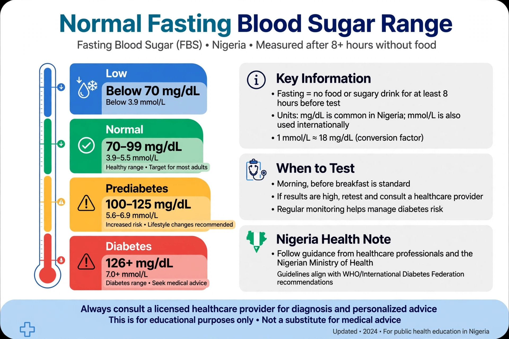

What is Normal Fasting Blood Sugar? Normal Range in Nigeria (mg/dL & mmol/L)

Fasting Blood Sugar (FBS) is the amount of glucose in your bloodstream after you have abstained from food and drink (except water) for 8 to 12 hours. Doctors routinely recommend testing first thing in the morning before breakfast. It serves as the primary screening tool to detect prediabetes and type 2 diabetes across clinics in Nigeria.
Normal Fasting Blood Sugar Range in Nigeria
| Classification | mg/dL | mmol/L | Clinical Guidance |
|---|---|---|---|
| Normal | 70 – 99 | 3.9 – 5.5 | Optimal glucose balance |
| Prediabetes | 100 – 125 | 5.6 – 6.9 | Warning range – lifestyle modifications advised |
| Diabetes | 126 and above | 7.0 and above | High – medical evaluation required |
| Low (Hypoglycemia) | Below 70 | Below 3.9 | Low – fast-acting sugar needed |
In Nigeria, diagnostic laboratories commonly reference 70–100 mg/dL as the baseline normal. The range between 100–125 mg/dL represents the warning zone. To convert $\text{mg/dL}$ to $\text{mmol/L}$, divide the value by 18.
Example: $126 \div 18 = 7.0 \text{ mmol/L}$.
What if your FBS is 100–125 mg/dL (5.6–6.9 mmol/L)?
This outcome indicates prediabetes (for example, a reading of 110 mg/dL or 6.1 mmol/L). It does not mean you have diabetes today. Secondary factors such as late-night heavy dining, high stress, active infection, or inadequate sleep can temporarily elevate sugar levels. Prediabetes can frequently be reversed through dietary adjustments and regular daily walking.
What if your FBS is 126 mg/dL (7.0 mmol/L) or higher?
If your fasting glucose returns at 126 mg/dL (7.0 mmol/L) or above on two separate testing days, it strongly suggests diabetes. Do not panic. Present your result slip to a medical practitioner for confirmation. The doctor will likely order an HbA1c test (3-month blood sugar average) or a 2-hour postprandial glucose test.
What if your FBS is below 70 mg/dL (3.9 mmol/L)?
A result under 70 mg/dL signals hypoglycemia. Symptoms include feeling shaky, sweaty, dizzy, lightheaded, or intensely hungry. Common triggers include skipped meals, excessive diabetes medication dosage, or prolonged strenuous exercise without adequate nutrition. Consume a fast-acting sugar source immediately and consult a doctor.
How to Prepare for an FBS Test in Nigeria
- Fast strictly for 8 to 12 hours: Do not consume food or beverages other than plain water.
- Schedule early morning: Complete your blood draw early before breakfast.
- Avoid heavy night meals: Refrain from alcohol or heavy swallow meals late the night prior.
- Inform the lab personnel: Disclose any ongoing prescription medications or supplements.
- Rest adequately: Avoid intense morning workouts or high stress prior to testing.
Got Your Fasting Blood Sugar Result?
Don't guess what your numbers mean. Mivvo provides clear, personalized explanations and doctor questions in seconds.
Frequently Asked Questions
Q: What is normal fasting blood sugar for non-diabetic in Nigeria?
A: 70–99 mg/dL (3.9–5.5 mmol/L).
Q: Is 100 mg/dL normal?
A: 100 mg/dL is at the borderline entry point. It is slightly elevated. Consider reviewing dietary habits and rechecking after 2 weeks.
Q: What is an FBS test?
A: FBS stands for Fasting Blood Sugar. It measures glucose levels after fasting to screen for early metabolic changes.